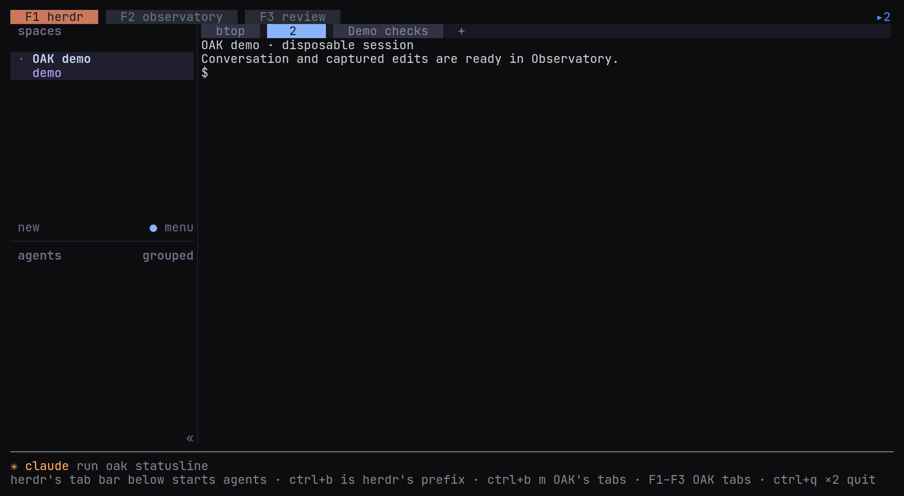

The herdr tab
The herdr tab runs the real terminal client for agents and remote machines.
The herdr tab runs herdr’s real client inside an OAK native terminal. Use it to create terminals, run agents, switch machines and answer permission prompts.
OAK’s outer bar has three fixed tabs on one row, each named with its key: F1 herdr, F2 Observatory and F3 Review. herdr’s own tab bar sits below it. Inside a herdr pane (as oak attach runs it) the herdr tab is absent: herdr is the host, and its own keys move between its tabs. On this tab OAK takes F1–F3 before herdr or the program sees them, with herdr’s prefix pressed or not, unless herdr’s config binds the key itself (as its prefix, or to an action or command, without the prefix or after it); with shift, ctrl, alt or super an F-key is another key and reaches herdr unchanged. Every other key on this tab goes to herdr or to the program in its pane, ctrl+a included. OAK listens on herdr’s own prefix, read from herdr’s config (ctrl+b by default, or each of the prefixes a list there names, as herdr 0.9.2 and later take them; inside tmux, a prefix tmux also uses is pressed twice): after it, m returns to the OAK tab you last used, while herdr leaves m unbound. Where herdr sets its config aside or repairs it, OAK follows: a binding in [keys] of the wrong type, or a list of prefixes under herdr 0.9.1, leaves herdr on its defaults, and a prefix herdr cannot read falls back to ctrl+b. Like herdr, OAK reads a capital letter as the letter with shift (ctrl+A is ctrl+shift+a), keeps shift as part of any other key (ctrl+shift+space is not ctrl+space, nor shift+f5 f5), and names every prefix as herdr does. A terminal without the kitty keyboard protocol sends ctrl+shift+a as it sends ctrl+a and ctrl+shift+space as it sends ctrl+space, and sends no super chord at all, so herdr and OAK follow such a prefix (ctrl+shift+a, super+b) only through the protocol; the key row and the ? help then say to leave the herdr tab with F2 or F3, or a click on OAK’s tab bar. Every other key after the prefix is herdr’s, unchanged, and the prefix pressed twice sends it to the program as herdr does. After herdr’s prefix, the status row names the keys OAK takes there. ctrl+q twice quits OAK from any tab, including this one, unless herdr’s prefix is ctrl+q: then it stays herdr’s on this tab, pressed twice too, and OAK quits from its own tabs. OAK asks for the repeat within two seconds; a single ctrl+q reaches the program in the pane once those two seconds have passed, or before the next key you press there.
A drag in a herdr pane selects as herdr does, and herdr copies the selection when you release the button, over OAK’s rows below its screen too. While OAK’s status row shows a message, its divider covers herdr’s last row, and a drag stops at the row above it. Leaving the tab with the button still down lets it go in herdr. herdr copies with the system’s clipboard tool where it has one; over ssh, in VS Code’s terminal, in WSL, or on Linux without wl-copy, xclip or xsel, or with neither WAYLAND_DISPLAY nor DISPLAY set, its copy, and what a program in its pane copies, reaches the clipboard of the terminal OAK runs in, as OAK’s own copies do.
In the terminal app a session starts here, in herdr’s own tab bar and sidebar, on the selected machine. The VS Code and JetBrains timelines keep their own new-session control, which starts the agent in a herdr terminal.

Installation
Installing OAK installs herdr: the installers provision the checksum-verified version in herdr.lock, currently 0.9.1, and preserve a newer installed version. oak doctor --fix repairs the backend, integrations, plugin, missing sidebar widths and native terminal helper permissions, and sets gruvbox as the default when no theme name is set. oak doctor also reports a herdr server that was started from inside a Claude Code session, because every Claude Code agent opened in its panes then runs as a child session with transcript saving off; stop it from a plain terminal with herdr server stop, then oak doctor --fix.
Conversation navigation
herdr’s prefix, then M, selects and pins herdr’s focused conversation in Observatory; on a pane with no session it still goes to OAK’s tabs, and says why. herdr’s Open in OAK plugin action does the same. herdr’s prefix, then V, opens Review on that conversation, as oak focus --tab review does, reading it on the machine whose herdr runs it; a pane with no session goes to OAK’s tabs, and says why. Review’s key is V because herdr binds R after its prefix to reload its config. From Observatory, t focuses the selected live pane in herdr.
OAK takes m, M and V after the prefix only while herdr leaves them unbound: bind one in herdr’s config.toml and herdr gets it, and the ? help says so. Bind all three, and the key row, the status row and the help offer F1–F3, or, where herdr binds those too, a click on OAK’s tab bar to leave the herdr tab. Claude Code and Codex both use ctrl+a to go to the start of the line, and it reaches them directly.
Machines
oak machine add build-box user@host
oak machine list --json
oak doctorherdr provisions the target over SSH and forwards terminal operations. Review requires the files, transcripts and store on the host where capture runs. Usage is measured on each machine for itself; where this machine has no current reading of the Claude account’s 5-hour or weekly share, the readouts show a saved machine’s reading of the same account (with no Claude Code login here, of the one account the saved machines name) and name it, as in ✳ claude (build-box) wk: 22%, and the token and dollar estimates count each message of the account once across every machine whose usage the local database holds (brought by oak sync, or read from each saved machine over SSH every five minutes), so machines of one account show the same budgets and month (SECURITY.md lists the account reads, and Database & sync explains how each message is counted once). An account with no five-hour limit, whose usage answer carries no 5-hour window (as a verified Ultra plan’s does), shows no 5-hour readout, and the status bars show none for any plan; the newest usage answer, on any machine of the account, decides whether it has one, and no 5-hour share does. The doctor suggests SSH connection reuse when forwarding exceeds eight seconds, and says why a saved machine gave no usage reading. See Remote development.
Agents in a remote machine’s panes keep running when the laptop sleeps, disconnects, detaches or quits OAK, provided that machine’s herdr server outlives the SSH login that started it. On a Linux host whose logind sets KillUserProcesses=yes, a server started inside an SSH login stops with it, together with every agent in its panes; oak doctor --fix starts the server in a user scope of its own instead. Agents on the laptop itself stop while it sleeps. See Keeping agents running when the laptop closes.
Terminal ownership
herdr owns agent terminals. OAK’s local focus server routes navigation only; stopping or replacing that endpoint does not stop herdr’s agents.
Tab names and the btop tab
OAK names herdr’s tabs after the sessions their panes run, and renames a tab when its session’s title changes: a rename, a new title from Claude Code or Codex, or the title claude.ai gives a Remote Control session. A tab is named when its label is one nobody chose: the number herdr gives an unnamed tab, an agent kind such as claude or codex, the title the agent gives its own terminal, or a title OAK set earlier. A tab you rename keeps your name. Codex’s memory-writing agent runs inside the session in its pane and never takes the pane or names its tab.
The Observatory and Workers use a named tab’s label before the session title. A default position number, a blank label or an agent kind never replaces a real session title, even before the tab is renamed or in a read-only oak tui --once frame. A number other than the tab’s position, such as 2024, counts as a chosen name.
While the terminal app runs, it names the tabs on this machine, and has the OAK on every saved machine name the tabs there, so they go on following their sessions after the app closes. A session whose capture hooks never ran in its pane on that machine (OAK’s hooks are not installed there, or the session began before they were) is one that machine cannot name, so the app names its tab itself. It does not need to be open: each session’s capture hooks rename that session’s own tab, on the machine where it runs, when a turn starts or ends and when a Codex session resumes, and OAK’s Claude Code status line, where it is installed, does the same when the title it shows changes.
On Linux and macOS, each machine’s home workspace, or its first workspace when none is labelled home, keeps a btop tab running a system monitor: btop, else bpytop or htop, as found in that pane’s shell, which must be a POSIX shell such as bash or zsh. OAK labels the monitor’s pane btop too, and that pane is the only one it types into: a pane you split off beside the monitor stays yours. OAK makes the tab again whenever it is missing, for example after the monitor quits, starts the monitor when the pane’s shell is idle at the prompt, and never closes a tab. When an agent runs in the monitor’s pane, OAK leaves it alone, names the tab after the agent’s session (or its kind until the session has a title) and opens a new btop tab.
When herdr’s server restarts, for example after a reboot, the monitor’s pane comes back as a plain shell. On Linux and macOS, OAK’s herdr plugin starts the monitor in it again as herdr’s server starts, before OAK runs; it types only into that pane’s idle shell and never makes a tab. The installers, oak update and oak doctor --fix link the plugin on the machine they run on. Like herdr’s agent hooks, it needs python3; herdr plugin log list shows its runs.
cmd+w to close a herdr tab
Add this to ~/.config/herdr/config.toml (merge it into an existing [keys] table), then reload herdr’s config from its menu. cmd, command and super are interchangeable on every platform; only the label herdr prints differs, super on Linux:
[keys]
close_tab = "cmd+w"herdr --help shows the resolved config path; HERDR_CONFIG_PATH can override it. This closes the selected tab in herdr’s own bar. herdr’s prefix then m, and F2 or F3, still return to OAK’s outer tabs.
The terminal must support the kitty keyboard protocol and pass cmd+w through to herdr. In Ghostty, add keybind = super+w=unbind to its config to remove the terminal’s binding. In kitty, iTerm2 or WezTerm, enable the protocol where needed and remove the terminal’s own close-tab shortcut. Terminal.app cannot send this chord through the protocol.